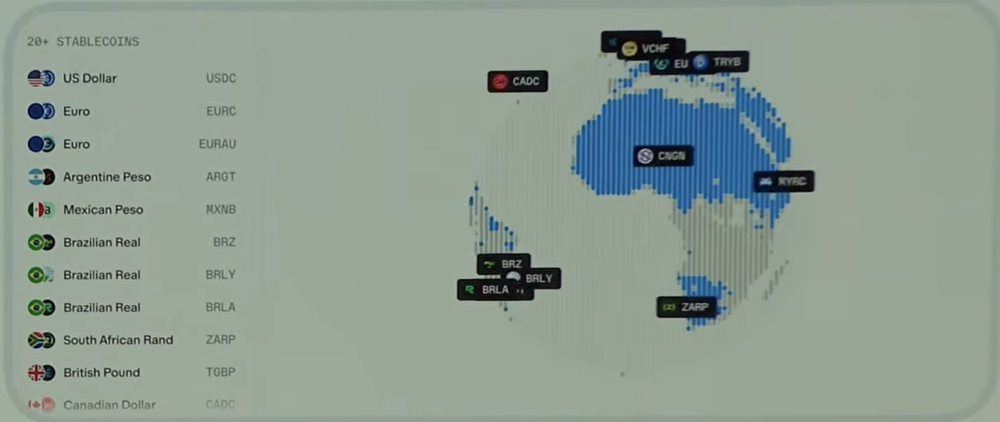
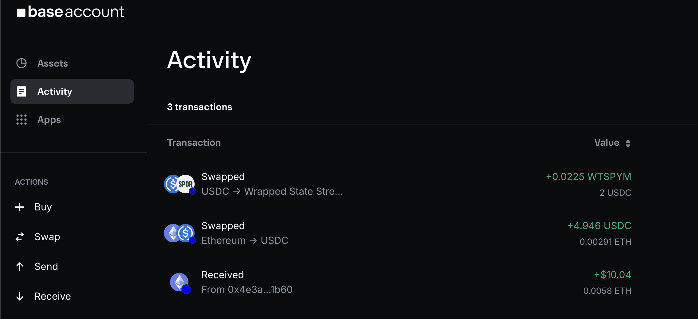
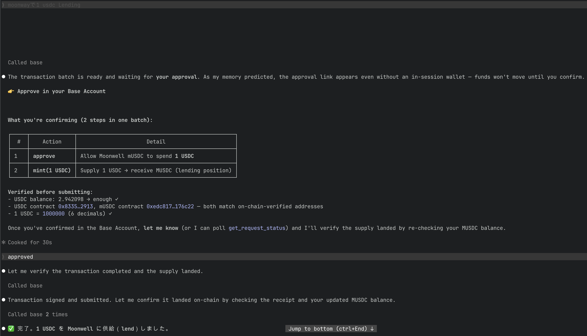
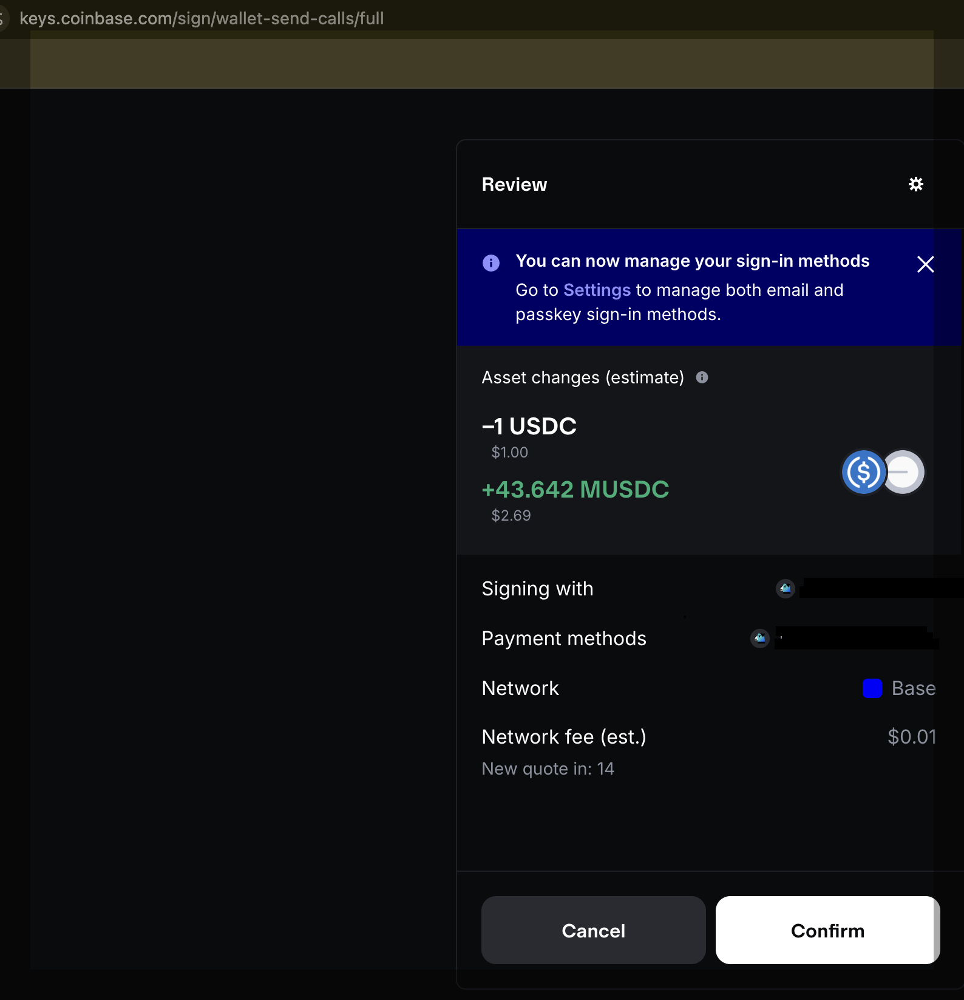
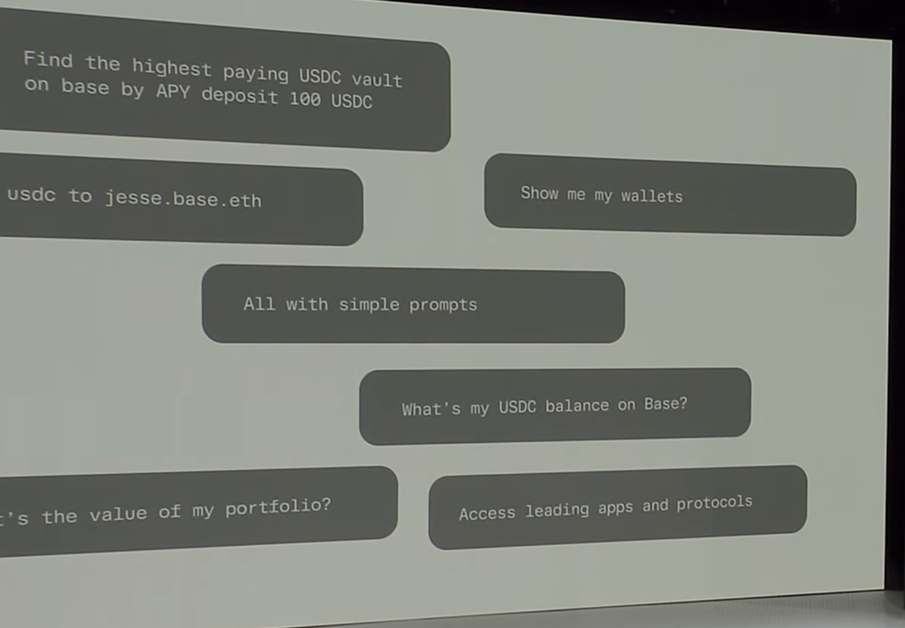

Coinbase が作った、速くて安いお金のネット（Ethereum の L2）。 秒未満の速さ・1セント未満の手数料で、株・通貨・決済・AIの取引を 24時間365日つなぐ── その「いま」を視覚的にまとめました。
📊 最新の値は DefiLlama（リアルタイム）→ で確認できます。TVL・ステーブル時価総額・手数料などを他チェーンと並べて見られます。
Base は Coinbase 発の Ethereum L2（レイヤー2）。 たとえるなら 高速道路の上に作った追い越し車線──Ethereum の安全性を借りつつ、 速く・安く処理する上位レイヤーです。トークン化された株、コモディティ、各国通貨、AI同士の支払いまで、 すべてが同じネットの上で動き始めています。
「秒未満の速さ・1セント未満の手数料・24/7/365」を Base 自身が掲げる基本性能。取引は待たずに通る。
暗号資産だけでなく、株式・コモディティ・予測市場・各国通貨まで。「橋であって島ではない」。
数千の企業に使われ、誰にでも開かれている。規模・コンプラ・ブランドの後ろ盾がある L2。
BTC現物シェア（約43%）は第三者の統計で確認できた値です[14]。TVL・ステーブル時価総額の順位は DefiLlama（2026-06-22）で確認した値です[19][13]。$19兆の決済額は Base 公式が発表した値です[1]。
2026-05-13 にメインネット稼働。Optimism の Superchain から独立して以来、 Base が単独で実行した初の大型ネットワークアップグレードです。 「より安全・より速い・より作りやすい」を一度に進めました。
2種類の安全確認（TEE と ZK ＝異なる方式の証明）を併用します。出金の正しさを、ハードウェアで守られた実行環境（TEE）と、数学的に検証できる証明（ZK）の2つの目でチェックする仕組みです。
・通常経路：どちらか一方の証明があれば確定（単一証明パス）。Beryl でこの待ち時間を 7日 → 5日に短縮。多くの人が通るのはこちら。
・特急経路：両方の証明が一致すれば 最短1日で確定。ただし ZK 証明の生成コストが高く、現状はまれ。
1つの番人に頼らず複数の検証を組み合わせることで、「運営者に依存しない」状態へ近づく、大きな一歩です。
バラバラだった処理ソフトを Base 自前の1セットに集約。1秒あたりにさばける取引数（TPS）を底上げし、瞬間的に 毎秒5,000件 の取引を複数回さばけた実績も。さらなる高速化（目標：毎秒10億ガス相当の処理能力）への土台。
Ethereum 本体の最新アップデートに細かく整列。内部を合わせておくことで、多くのアプリは改修なしでそのまま動きます。
ユーザー側の作業は不要。Base が「より速く・安全・安く」なるだけ。Ethereum への出金は multiproof の成熟とともに速くなる。
稼働前に Immunefi の監査コンペ（4/21–5/4）を実施。重大脆弱性に最大 $250,000 の報奨。「まず安全」を数字で示した。
Base の第2の大型アップグレード。前回 Azul のわずか4週間後に投入され、 この刊行スピードこそ「Optimism から独立して自分たちでアップグレードを回せるようになった」証拠です。 Beryl は 3つの目玉を一度に届けます。
コンプラ機能を最初から内蔵した「お金トークンの新規格」をチェーンに導入。Base を“第一級の発行基盤（first-class issuance platform）”にする中核。
Base から Ethereum への出金には2つの経路があり、多くの人が通る通常経路を 7日から5日に短縮（もう一方の「両方式の証明が揃う特急経路」は Azul で最短1日だが、コストが高く今はまれ）。安全性を保ちつつ段階的に短縮します。
ノードの保存容量を削減し、計算を高速化。処理上限を上げても詰まらない設計に。さらなる拡張への土台です。
メインネット 2026-06-25・testnet は Base Sepolia 先行・3本柱（B20 / 出金7→5日 / Reth V2）はいずれも公式blogに記載されています[2][5]。
ERC-20 の進化形として Base が作った独自トークン規格。 コンプライアンス機能（移転制御・凍結＆差押え・権限管理・メモ・発行上限）が 最初からチェーンに内蔵。 発行体が「トークン化は難しい（コンプラ・相互運用・セキュリティが壁）」と感じてきた問題を、規格側で解きます。
チェーン本体に作り込んだ標準機能なので、仮想マシン（EVM）を介さず直接動いて速く・安い。ERC-20 互換で既存ウォレット・取引所もそのまま。
規制対応の「止める・戻す」を標準装備。ポリシー（許可/拒否リスト）で送受信を制御でき、規制発行体の凍結・差押えにも対応。
用途で2種類を使い分け。Asset＝株・コモディティなど幅広い資産向けの汎用型。Stablecoin＝通貨に連動するステーブル専用の型。現実資産のトークン化（RWA）やステーブルコインに向きます。
狙いはシンプル ── 「誰でも、あらゆる資産を、コンプラ込みで発行できる」。 Coinbase から Clanker、大手ステーブル発行体まで採用が始まっています。
規制対応トークンの標準は以前からあります（例: ERC-3643＝証券トークンの国際標準）。 違いは「機能」ではなく「作る“場所”」です。
※ 比較対象は ERC-3643[12]。「B20が優れている」と断定する中立比較は未公開のため“構造の違い”として提示。将来は「自分のトークンでガス代を払う」等のチェーン側拡張も予定（次の Cobalt）。
Base 公式によると、Base 上にはドル以外の ローカル通貨ステーブルコインが25種以上あり、ユーロ・円・メキシコペソ・ナイジェリアナイラ・シンガポールドルなどが利用できます。 「自国通貨に連動するデジタル通貨」で、誰もが 自分が普段使う通貨のまま 世界の金融サービスにアクセスできる未来です。
※ 日本の円（JPY）は Base 公式が言及はしているものの具体的な対応は未定（主要な円ステーブル JPYC・GYEN は現在おもに Ethereum・Polygon・Solana で利用、2026-06時点）。今後の展開対象という位置づけです。

マップの各通貨ステーブルは、それぞれ別の発行体が複数チェーンに出している既存のステーブルコイン。 Base はその対応チェーンの1つです（Ethereum や Solana 版があるのと同じ）[2]。 たとえば USDC・EURC は Circle が多数チェーンに展開[7]、CADC は発行体が「Base に拡張」と発表[8]。
Base 独自なのは「通貨」ではなく「土台」 ── それらをコンプラ込みで発行できる規格 B20（→ B20 セクション）です[6]。
いずれも 発行体は Base ではなく外部。Base は各社が展開する“対応チェーンの1つ”です。 （「✓」は、発行体やプレスの公開情報で Base 対応を確認できたもの）
| 通貨 / ティッカー | 発行体 | 主な対応チェーン | Base対応 |
|---|---|---|---|
| USD / USDC | Circle | Ethereum・Solana・Base ほか多数（公式に34チェーン規模）[7] | ✓ |
| EUR / EURC | Circle | Ethereum・Solana・Avalanche・Base・Stellar | ✓ |
| BRL / BRZ | Transfero | Ethereum・BNB・Solana・Polygon・Arbitrum・Base ほか16+[9] | ✓ |
| CAD / CADC | Paytrie / Loon | Ethereum・Polygon・Arbitrum・Solana・Base（“expand to Base”と明言）[8] | ✓ |
| MXN / MXNB | Juno（Bitso） | Arbitrum・Ethereum・Avalanche[10] | 発行体公式は左記チェーン |
※ メキシコペソ（MXN）は Base 公式が言及しています。発行体公式が案内する対応チェーンは上記のとおりです（2026-06時点）[10]。
Wyre X・Rain などの発行体が、2026年だけで Base 上で $600M のステーブル決済を実行。日常の買い物に使える段階に。
Tu Yo・Flex はドルステーブルと BTC で「世界水準の体験」を提供。Bitso は MXN（メキシコペソ）を導入し、ペソで稼げる Vault も展開。
すべての通貨が同じネットワークにつながれば、どこの誰でも「自国通貨のまま」グローバル金融に参加できる。
$19兆 / 25種+ / $600M は Base 公式の発表値です（2026年時点）[1]。 各国通貨ステーブルが各地で立ち上がっている潮流は、第三者（a16z など）も報告しています[15]。
Base MCP は「AIに “手” を持たせて操作させる仕組み」。 Claude などの普段のツールから 簡単な言葉（simple prompts） で、あなたのウォレットに安全に接続し、 送金・取引・swap などのオンチェーン操作を実行できます（権限はあなたが管理）。
図解：Base MCP の仕組み ── 「話す」が「オンチェーン操作」に変わるまで
MCP ＝ AI とアプリをつなぐ共通の差し込み口（USB-C の AI 版）。 Base MCP はそこにあなたのウォレットをつなぐ部品。下の図の①→④で動きます。
① あなた → AI
「jesse.base.eth に 10 USDC 送って」と普段の言葉で頼む。
Claude / Codex / Hermes / OpenClaw など、使い慣れたツールでOK。
② Base MCP
頼みをオンチェーンの操作へ翻訳する差し込み口。AI とウォレットの間に立つ“通訳兼ゲート”。
🔑 許可はあなたが管理③ あなたのウォレット
（Base Account）
account.base.app で作る自分のウォレット。許可した範囲だけ署名・実行し、鍵は常に手元。AI が勝手に動かすことはない。[18]
④ Base（オンチェーン）
送金・swap・Aerodrome/Uniswap で流動性提供・Morpho で借入まで、数秒・低コストで確定。
▲ ①頼む → ②MCPが翻訳（許可ゲート）→ ③ウォレットが許可範囲で実行 → ④Base上で確定。 肝は ②③：AI に渡すのは「操作のお願い」までで、鍵と許可はあなたの手元に残ります。 [1]（仕組みの呼称・対応ツールは Base 公式発表）／MCP 規格は公式[17]。

実例：AI に頼む → あなたが承認 ── Moonwell に 1 USDC を“貸す”を対話だけで



Base 公式によると、Virtuals は 4万体の自律エージェントで月$400万超、Banker は手数料で自走し $3,000万超のエージェント収益。 ※いずれも Base 公式が示す値です[1]（集計の前提により数値は変わり得ます）。
x402 は Coinbase 発のエージェント決済規格（HTTP の "402 Payment Required" 由来）。 Base 公式によると x402 決済の約9割が Base 上で完了。AI が相互に支払う基盤が Base に集まりつつあります。
Aerodrome / Uniswap で流動性提供、Morpho で借入まで、対話のまま完結。勉強会では、この「話しかけるだけ」の操作を実例とあわせてお見せします。
統合スタックへの移行で、Base は 年6回（従来年3回）の、小さく狙いを絞ったハードフォークを目指します。 「ネット全体の定例バージョンアップ」を頻繁に・リスク小さく回す方針です。
Beryl 稼働日（6-25）・Cobalt（9月・ネイティブAA）はいずれも公式blogに記載されています[2][3][4]。
この資料の数字は、第三者の統計で確認できた数字と、Base 公式が発表した数字に分けて示しています。 どちらも出典と時点を併記しているので、安心して参照いただけます。
・TVL 約 $4.2B（DefiLlama, 2026-06-22・L2で1位/全チェーン6位）[19]
・ステーブル時価総額 約 $4.86B（DefiLlama, 2026-06-22・L2で1位/全チェーン6位）[13]
・オンチェーンBTC現物シェア 約 43%（Blockworks/PANews, 2026-03）
・5,000 TPS（Base 公式 / CMC）
・ステーブル決済 $19兆（2026年）
・ローカル通貨ステーブル 25種+
・Wyre X・Rain の決済 $600M
・エージェント収益（Virtuals 月$400万 / Banker $3,000万+）
本文中の [1]〜[18] はこのリストに対応します。すべてクリックで原典に飛べます。 Base 公式（docs.base.org / blog.base.dev / 公式発表）を中心に、発行体公式・第三者統計・参考記事を種別とともに示します。
キーノート由来の画像は上記 [1]（Base 公式資料）のスクリーンショットです。Base Account の画面は account.base.app の実画面です[18]。
このページは第3回Base勉強会の紹介ページです。